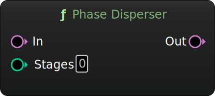

Phase Disperser
A chain of allpass filters to soften transients and add that classic laser/slinky-style effect.
Inputs
| Name | Description | Type |
|---|---|---|
| In | Incoming audio. | Audio |
| Stages | Number of allpass filter stages to apply (1-128). | Int32 |
Outputs
| Name | Description | Type |
|---|---|---|
| Out | Phase-dispersed audio. | Audio |